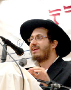

9 Days of Chanukah?
How would you like to find out that Chanuka could be extended to nine days? It would be another night to light Menorah, to eat Latkes, to receive Chanukah gelt, and to play Dreidel! Well according to some commentaries that is what will happen in the times of Yemos HaMoshiach!

A PLANE ABOVE NATURE
Everybody knows that Chanuka is celebrated for eight days. It commemorates the miracle that Hashem made in the times of the second Beis HaMikdash. In the words of the Gemara (Shabbos 21b): “What is the reason of Chanukah? Our Rabbis taught: On the twenty-fifth of Kislev commence the days of Chanukah, which are eight, during which a lamentation for the dead and fasting are forbidden. For when the Greeks entered the Temple, they defiled all the oils therein, and when the Chashmonaim dynasty prevailed against and defeated them, they made search and found only one cruse of oil which lay with the seal of the High Priest, but which contained sufficient oil for one day’s lighting only; yet a miracle was wrought therein and they lit [the lamp] therewith for eight days. The following year, these days were appointed a Festival with the recital of Hallel and thanksgiving.”
The simple reason that Hashem made the candles burn for 8 days is that it took 8 days to obtain fresh, natural oil to be used in the Beis HaMikdash. According to the Kabbala, however, there is a deeper meaning. Eight is the number that represents G-d’s miracles that transcend nature. In the words of the Maharal: “The number seven symbolizes the complete purpose of human existence, combining the spiritual level of the Sabbath with the physical effort of the week. Going beyond seven, the number eight symbolizes man’s ability to transcend the limitations of physical existence. Thus, with a gematria of eight, ח stands for that which is on a plane above nature, i.e., the metaphysical Divine. The study of the Torah and the practice of its commandments are the ways by which Israel can strive to exalt human spirituality towards the realm above the natural.» That›s why the Mitzva of Bris Mila – the symbol of the super-natural connection of a Jew with Hashem – is performed on the eighth day of life and why the era of Moshiach is symbolized by the number eight.
AN OBSOLETE QUESTION
How would you like to find out that Chanuka could be extended to nine days? It would be another night to light Menorah, to eat Latkes, to receive Chanukah gelt, and to play Dreidel! Well according to some commentaries that is what will happen in the times of Yemos HaMoshiach!
The Minchas Chinuch writes (Mitzva 301): “Everyone knows of Yom Tov Sheini Shel Galuyos (Hebrew: יום טוב שני של גלויות), the extra day that Jews outside of Eretz Yisroel celebrate for each Biblical Yom Tov. Yom Tov Sheini was established as a g›zeira (rabbinic law) by the rabbis of the Sanhedrin during the Second Temple period, approximately 2,000 years ago, and is observed to this day. The need for a second festival day arises from problems encountered by Jews living in the Diaspora following the Babylonian exile.
“The Jewish calendar is a lunar system with months of 29 or 30 days. In Temple times, the length of the month depended on witnesses who had seen the new moon coming to the Temple in Jerusalem. Following confirmation of their evidence, a new Jewish month would be proclaimed. News of this proclamation was subsequently sent out to all Jewish communities. If no witnesses arrived, the new month was proclaimed the following day. Those communities who didn’t receive word of the precise date of the beginning of the new month by the time of a festival would keep the festival for two days, to account for the eventuality of the new month not being proclaimed until the following day.”
In the time of exile, he continues, we do not have the Sanhedrin. Consequently, the new month is calculated mathematically and we have a calendar based on a predetermined system. However when Moshiach comes and the Sanhedrin will return, we will once again calculate the months based on the testimony of witnesses. If so it is possible, writes the Minchas Chinuch, that communities will have to add an extra day to the holiday of Chanuka and as a result celebrate nine days of Chanuka!
The Rebbe (Toras Menachem 5749 vol. 1 page 227) seems to disagree with the above: The entire foundation of the Minchas Chinuch is based on the assumption that during the era of Yemos HaMoshiach it will be possible that people living far from the Beis HaMikdash will not know when the Sanhedrin sanctified the new month. However, with the advance of technology (satellite, internet etc.) it is probable that every Jew around the world will know the very moment when the new month was established. If so we will continue to observe only eight days of Chanuka in Yemos HaMoshiach.
Rabbi Avtzon is the Rosh Yeshiva of Yeshivas Lubavitch Cincinnati and a well sought after speaker and lecturer. Recordings of his in-depth shiurim on Inyanei Geula u’Moshiach can be accessed at http://www.ylcrecording.com.
Rabbi Gershon Avtzon. "9 Days of Chanukah?." Beis Moshiach, no. 861 (December 21, 2012).